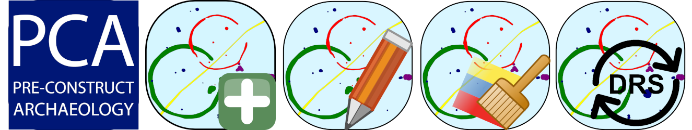

PCA QGIS Plugin Repository
PCA Geomax Survey Processing is an internal QGIS Plugin specifically built for PCA survey data management and processing purposes.
About
PCA Geomax Survey Processing is an internal QGIS Plugin specifically built for PCA survey data management and processing purposes.
It is a component of the new DRS/GIS integrated data management system, and it is based both on the new Geomax codelist system and on the raw survey data exported in shapefile format.
The current version of the plugin is compatible with the Geomax codelist version draft 4.2. A dedicated help in the toolbar provides more inforamtions and detailed use procedure.
Toolbar: 
Version: 1.07
Author: Valerio Pinna
Author: Valerio Pinna
Author email: vpinna@pre-construct.com
Bug tracker: https://github.com/PCA-Geodata/PCA_Geomax_Survey_Processing_QGIS_Plugin/issues
Repository: https://github.com/PCA-Geodata/PCA_Geomax_Survey_Processing_QGIS_Plugin/issues
Uploaded by: Valerio Pinna
Last update: 2022-10-10
Tags:PCA, Geomax, survey, processing, DRS
PCA Post-excavation is an internal QGIS Plugin specifically built for the PCA post-excavation phase
About
PCA Post-excavation is an internal QGIS Plugin specifically built for the PCA post-excavation phase.
It is a component of the new DRS/GIS integrated data management system, and provides a set of tool that help definings groups, entities, periods, sub-periods and phases for all the archeological features.
Toolbar: 
Version: 1.30
Author: Valerio Pinna
Author email: vpinna@pre-construct.com
Bug tracker: https://github.com/PCA-Geodata/PCA-PostExcavation-QGIS-Plugin/issues
Repository: https://github.com/PCA-Geodata/PCA-PostExcavation-QGIS-Plugin
Uploaded by: Valerio Pinna
Last update: 2022-10-21
Tags: PCA, python, archaeology, post-excavation, phasing, grouping, periods
This is an internal QGIS Plugin that provides a quick access to a array of queries built for check the PCA DRS Spreadsheet during the post-excavation phase.
About
This plugin provides a quick access to a array of queries built for check the PCA DRS Spreadsheet during the post-excavation phase.
It is a component of the new DRS/GIS integrated data management system, and provides a set of tool that help definings duplicated context numbers or recorded features not matching the site plan.
Toolbar:
Version: 1.02
Author: Valerio Pinna
Author email: vpinna@pre-construct.com
Bug tracker: https://github.com/PCA-Geodata/PCA-DRS-Spreadsheet-Checks-QGIS-plugin/issues
Repository: https://github.com/PCA-Geodata/PCA-DRS-Spreadsheet-Checks-QGIS-plugin
Uploaded by: Valerio Pinna
Last update: 2022-10-18
Tags: PCA, DRS, spreadsheet, postexcavation, checks, duplicates
This plugin provides a set of tools to generates trenches for archaeological evaluations.
About
This plugin provide a set of tools to generates trenches for archaeological evaluations and to generate the necessary files to configurate the GNSS setout.
Toolbar: 
Version: 1.1
Author: Valerio Pinna
Author email: vpinna@pre-construct.com
Bug tracker: https://github.com/PCA-Geodata/Evaluation-Trenches-Generator-QGIS-plugin/issues
Repository: https://github.com/PCA-Geodata/Evaluation-Trenches-Generator-QGIS-plugin
Uploaded by: Valerio Pinna
Last update: 2022-09-07
Tags: PCA, python, archaeology, evaluation, trench, setout
This plugin converts any raster to a GeoPackage. It builds also the piramids.
About
This plugin is an internal PCA QGIS plugin that converts any raster to a new GeoPackage raster layer with calculated piramids.
Version: 1.1
Author: Valerio Pinna
Author email: vpinna@pre-construct.com
Bug tracker: GitHub Issues
Repository: GitHub
Uploaded by: Valerio Pinna
Last update: 2022-10-03
Tags:PCA, raster, piramids, gpkg, conversion, orthophoto
Replaces a geometry keeping the attributes unchanged.
Moved on the official QGIS Python Plugins Repository
About
The plugin replaces a geometry keeping the attributes unchanged. It work with any type of geometry and any vector layer format.
Version: 2.0
Author: Valerio Pinna
Author email: vpinna@pre-construct.com
Bug tracker: https://github.com/ValPinnaSardinia/Replace-Geometry-Plugin/issues
Repository: https://github.com/ValPinnaSardinia/Replace-Geometry-Plugin
Uploaded by: Valerio Pinna
Last update: 2022-10-09
Tags: PCA, attribute, digitizing, geometry, point, polygon, polyline, replace
This plugin snaps a selected point to the closest point of a feature from a defined layer.
About
This plugin snaps a selected point to the closest point of a feature from a defined layer. It can be used during survey Processing to snap Drawing Points to sections or Archaeological features.
Version: 1.02
Author: Valerio Pinna
Author email: vpinna@pre-construct.com
Bug tracker: GitHub Issues
Repository: GitHub
Uploaded by: Valerio Pinna
Last update: 2022-10-09
Tags: PCA, snapping, digitizing, geometry, point
This plugin snaps a selected line to the closest point of a feature from a defined layer.
About
This plugin snaps a selected line to the closest points of a feature from a defined layer. It can be used during survey Processing to snap Sections to Archaeological features.
Version: 1.02
Author: Valerio Pinna
Author email: vpinna@pre-construct.com
Bug tracker: GitHub Issues
Repository: GitHub
Uploaded by: Valerio Pinna
Last update: 2022-10-09
Tags: PCA, snapping, digitizing, geometry, line